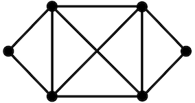
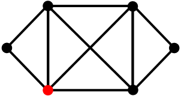

Choose a location:
The City
By Vee and Gethen
My body has no scars.
I cannot leave. Or can I?
I love everything about this palace but I am overwhelmed with obligation to love it.
This palace is too big to call home.
My thoughts have devolved into simplistic commands to my body, speckled with feral hopes of escape.
My parents love is suffocating.
The result of tender opulence is monotony...
monotony,
monotony,
monotony.
What is light without its absence? What is understanding without knowledge? What is knowledge without experience?
The bedroom on the fifth floor to the right has been mine since the day I was born. It has always been a welcoming space. A bed with a cloth top sits in the corner, made perfectly and drenched in the clean smell of perfumed soap. The ceiling is made of dark wood beams, and the walls are draped in elegant wallpaper. A matching desk and hand-embroidered tuffet are next to the bed. The desk holds a quill with thick, blue ink. A piece of blank paper taunts me if I stare at it too long. The only sound I can hear is an unidentifiable bird singing to itself—-a comfort that costs an early morning. The overwhelming incense with strong, floral tones has remained the same for many years. The smell creates nausea in most, but the flat smell of grass outside drowns it out, making it bearable for a few. Above it all, a large window frames the unreachable town in all its glory.
The town is full of large, brownish structures with red accents. Steep, snow-covered mountains mark the borders. They are jagged and much larger than life lived in the palace. The mountains witness the creation of success and the ultimate, untimely fate of suffering. Stratocumulus-esque clouds often sit above these peaks. Gorgeous hills and tall trees sweep throughout. The town has many steps and small mud homes covered with dried grass. These alluring features have only expanded exponentially in the past few years.
I hesistate. I ponder writing down what the voice in my head commands... "Your palace is furnished with selfish thoughts... you are compelled to leave your castle."
Recommended Reading
- Asma, Stephen T. Buddha for Beginners. New York, Writers and Readers Publishing. Inc., 1996.
- Herbert, Frank. Dune. New York, Ace, 2021.